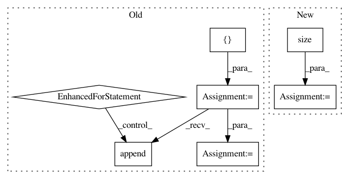

2026a8939d9ccc3e26ac776db5b4788846fd166c,dnc/sparse_memory.py,SparseMemory,read_from_sparse_memory,#SparseMemory#Any#Any#Any#Any#,181
Before Change
// read the kmeans closest and the least used memory
// TODO: for now we assume infinite memory, hence least used is the first free cell
read_vectors = []
pos = read_positions.squeeze().data.cpu().numpy()
for b in range(read_positions.size(0)):
read_vectors.append(T.stack([memory[b, p] for p in list(pos[b])], 0))
read_vectors = T.stack(read_vectors, 0)
return read_vectors, read_positions, read_weights
def read(self, read_query, hidden):
After Change
read_positions = var(read_positions)
read_positions = T.cat([read_positions, last_used_mem.unsqueeze(1)], 2)
(b, m, w) = memory.size()
read_vectors = memory.gather(1, read_positions.squeeze().unsqueeze(2).expand(b, self.K+1, w))
return read_vectors, read_positions, read_weights
In pattern: SUPERPATTERN
Frequency: 3
Non-data size: 7
Instances
Project Name: ixaxaar/pytorch-dnc
Commit Name: 2026a8939d9ccc3e26ac776db5b4788846fd166c
Time: 2017-12-03
Author: root@ixaxaar.in
File Name: dnc/sparse_memory.py
Class Name: SparseMemory
Method Name: read_from_sparse_memory
Project Name: SenticNet/conv-emotion
Commit Name: 87d57a3d34a1eef2c6ad5519741710e3321f136c
Time: 2019-03-19
Author: 40890991+soujanyaporia@users.noreply.github.com
File Name: DialogueRNN/model.py
Class Name: BiE2EModel
Method Name: forward
Project Name: SPFlow/SPFlow
Commit Name: 99f6a9b9b366e20ebc300fc5be904308c17c484f
Time: 2020-04-01
Author: steven.lang.mz@gmail.com
File Name: src/spn/experiments/RandomSPNs_layerwise/rat_spn.py
Class Name: RatSpn
Method Name: forward